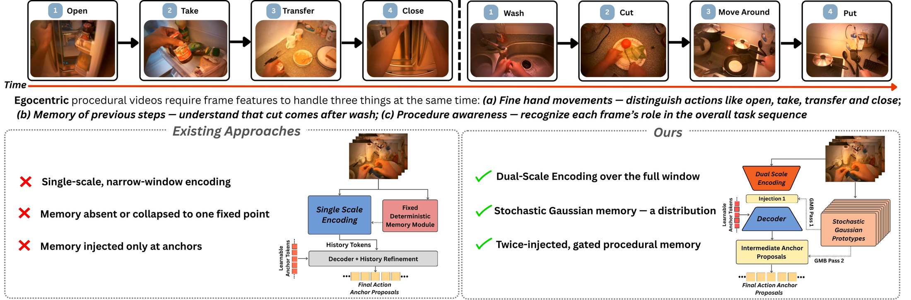
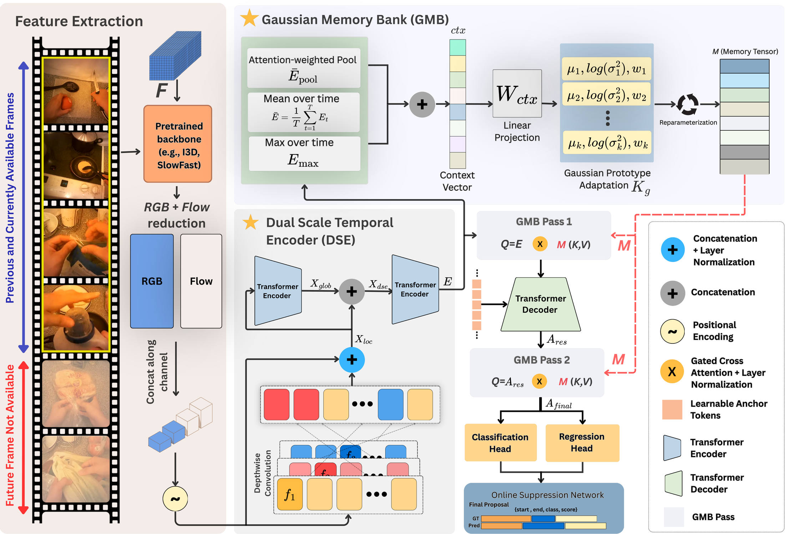
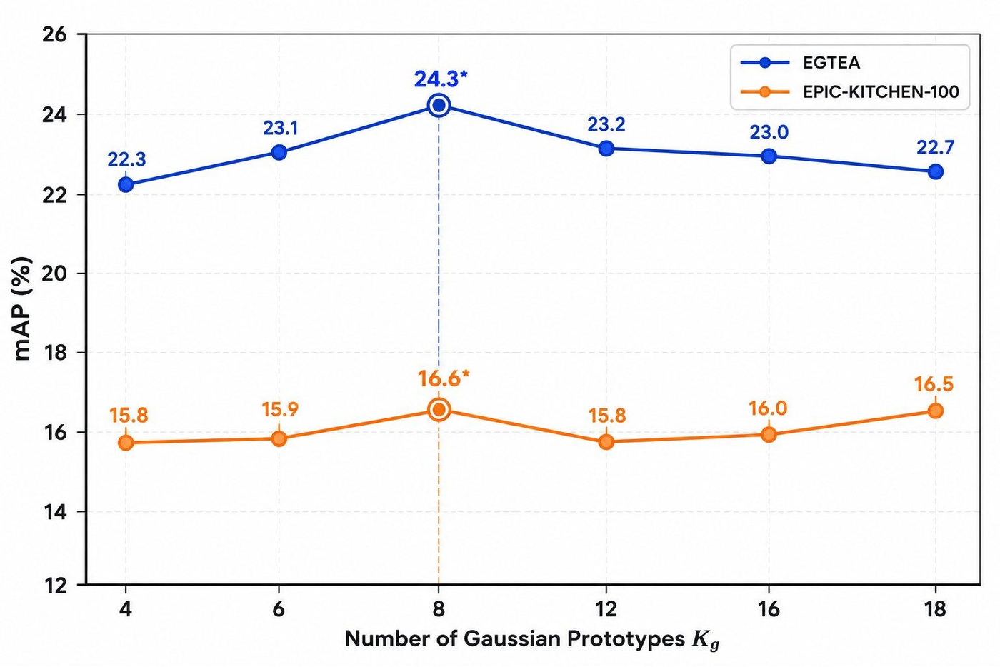

We introduce DUGO (Dual-Scale Encoding and Gaussian Memory Online), an online temporal action localization framework that detects actions in streaming video as they happen. It pairs a Dual-Scale Temporal Encoder with a Gaussian Memory Bank that injects stochastic procedural memory at two stages of the pipeline. DUGO sets a new state of the art on egocentric procedural benchmarks and also improves on a non-egocentric one.
Online Temporal Action Localization (OnTAL) aims to detect and localize action instances from untrimmed streaming videos in real time. Unlike offline approaches, OnTAL models have no access to future frames and cannot go back and refine earlier predictions, which makes the task considerably harder given the strict real-time constraints and narrow temporal window available. Most existing OnTAL methods lean on either brief anchor-based context or a single-scale memory of past frames, which limits how well they can capture actions unfolding across multiple time scales or requiring long-range reasoning in procedural videos. To address these gaps, we present DUGO (Dual-Scale Encoding and Gaussian Memory Online), a new OnTAL framework that jointly models local motion dynamics and long-range temporal dependencies. At its core, DUGO uses a Dual-Scale Temporal Encoder, pairing depth-wise local representations with global self-attention so it can pick up both fine-grained temporal patterns and broader contextual cues. We also introduce a Gaussian Memory Bank, which represents action memory as stochastic, input-conditioned Gaussian prototypes, allowing for richer temporal memory through gated cross-attention applied at both the encoder and anchor-query stages. Extensive experiments on procedural egocentric datasets (EGTEA, EPIC-Kitchens-100) demonstrate that DUGO achieves state-of-the-art performance while also providing strong improvements on a non-egocentric benchmark.
Paper summary video.
Egocentric procedural videos ask three things of every frame at once: fine hand-motion discrimination (open, take, transfer and close look alike), memory of previous steps (cut comes after wash), and procedure awareness (each frame's role in the overall task). Prior OnTAL methods rely on single-scale encoding with absent or one-shot deterministic memory. DUGO introduces dual-scale encoding and a twice-injected stochastic Gaussian memory that preserves multi-modal procedural ambiguity.

At each timestamp, a sliding window of RGB and optical-flow features from a pretrained backbone (I3D or SlowFast) is projected, concatenated and positionally encoded. The Dual-Scale Temporal Encoder turns this window into an encoder memory that captures both short motion cues and window-wide context. The Gaussian Memory Bank then summarizes that memory into a set of Gaussian prototypes and injects them twice: once into the encoder memory before decoding, and once into the decoded anchor features. Classification and regression heads produce proposals, which an Online Suppression Network (ONMS) filters in a streaming-compatible way.

A depthwise 1D convolution branch (kernel 5) keeps subtle, few-frame cues such as wrist rotations and grip changes. A Transformer self-attention branch on top relates every frame to the whole window. A learned projection fuses the two before the main encoder.
The encoder memory is pooled (attention, mean and max) into a context vector that adapts Kg = 8 learnable Gaussian prototypes. Samples are drawn with the reparameterization trick and stacked into a memory bank, so each prototype stays an addressable memory slot.
The same bank is injected via per-head gated cross-attention, first into the encoder memory (Pass 1) and then into the decoded anchors (Pass 2). Sharing it adds no extra parameters. Each head learns how much procedural memory to use.
Alongside L1 offsets, a 1D Distance-IoU loss on the decoded segment maximizes temporal overlap and penalizes center misalignment, tightening action boundaries.
| EGTEA | EPIC-Kitchens-100 | |||||||||||
|---|---|---|---|---|---|---|---|---|---|---|---|---|
| Method | 0.1 | 0.2 | 0.3 | 0.4 | 0.5 | Avg | 0.1 | 0.2 | 0.3 | 0.4 | 0.5 | Avg |
| MATR | 21.5 | 19.5 | 15.9 | 12.6 | 8.6 | 15.6 | 17.2 | 14.9 | 12.8 | 10.0 | 8.7 | 12.7 |
| OAT | 24.9 | 23.1 | 20.6 | 17.1 | 12.2 | 19.6 | 17.8 | 16.3 | 14.3 | 12.8 | 10.1 | 14.2 |
| HAT | 27.5 | 25.4 | 22.6 | 18.3 | 13.5 | 21.5 | 18.3 | 17.0 | 15.8 | 13.9 | 11.5 | 15.3 |
| DUGO (Ours) | 30.9 | 28.8 | 25.6 | 21.1 | 14.9 | 24.3 | 20.1 | 18.9 | 17.0 | 15.0 | 11.7 | 16.6 |
| Method | 0.3 | 0.4 | 0.5 | 0.6 | 0.7 | Avg |
|---|---|---|---|---|---|---|
| CAG-QIL | 8.5 | 6.5 | 4.2 | 2.8 | 1.9 | 4.8 |
| OAT | 16.7 | 13.0 | 10.0 | 6.3 | 3.2 | 9.8 |
| HAT | 19.1 | 14.7 | 10.1 | 6.3 | 3.7 | 10.8 |
| MATR | 23.5 | 19.3 | 14.3 | 9.4 | 5.7 | 14.4 |
| DUGO (Ours) | 24.7 | 20.0 | 15.5 | 9.8 | 4.5 | 14.9 |
MATR keeps a slight edge at the strictest threshold (tIoU 0.7).
| DSE | DIoU | GMB | 0.1 | 0.3 | 0.5 | Avg |
|---|---|---|---|---|---|---|
| – | – | – | 24.9 | 20.6 | 12.2 | 19.6 |
| – | – | ✓ | 29.2 | 24.0 | 12.7 | 22.2 |
| ✓ | ✓ | – | 29.1 | 24.5 | 15.1 | 23.4 |
| ✓ | – | ✓ | 28.5 | 23.9 | 14.5 | 22.7 |
| ✓ | ✓ | ✓ | 30.9 | 25.6 | 14.9 | 24.3 |
The first row is the OAT baseline. All three components together add +4.7 avg mAP.
| Method | FPS ↑ | AEDT (s) ↓ | Params (M) ↓ | GFLOPs ↓ |
|---|---|---|---|---|
| OAT | 85.27 | −1.28 | 92.43 | 5.545 |
| HAT | 42.7 | −1.14 | 247.10 | 6.435 |
| DUGO (Ours) | 40.2 | −1.02 | 129.22 | 7.755 |
AEDT (Average Early Detected Time) is how many seconds before an action ends a correct prediction is made; more negative means earlier. DUGO uses about half of HAT's parameters, stays real-time, and still detects actions more than a second before they finish.

@misc{bhuiyan2026dugodualscalegaussianmemory,
title = {DUGO: Dual-Scale Gaussian Memory for Online Temporal Action Localization in Egocentric Procedural Videos},
author = {Mohammed Aman Bhuiyan and Md. Sazzad Hossain Adib and Samiul Basir Bhuiyan and Mir Faiyaz Hossain and Syed Mohammed Shamsul Islam and Md Zakir Hossain and Shafin Rahman},
year = {2026},
eprint = {2610.41402},
archivePrefix = {arXiv},
primaryClass = {cs.CV},
url = {https://arxiv.org/abs/2610.41402}
}
We thank the creators of EGTEA Gaze+, EPIC-Kitchens-100 and MUSES for making their datasets publicly available, and the online action understanding community whose open research made this work possible.